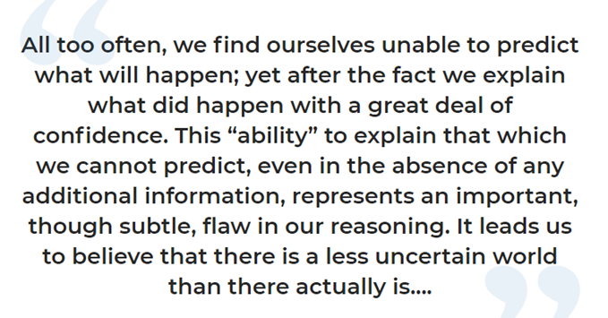

Open Science: Tools and approaches
Presentation at the Open Science course at Hjerkinn 2024
The Data Management Plan (DMP)
The Data Management Plan (DMP)
A document that describe your research data and how you plan to handle them
How is your data collected
How is your data stored
Who owns the data
How is the data going to be shared and archived
Are there any legal or ethical (e.g. GDPR) issues?
Volume of data
Costs associated with storing /archiving – and who is paying
The Data Management Plan (DMP)
A DMP usually start out with a template:
Preregistration of your hypothesis
Prergistration of your hypothesis
Useful to distinguish between exploratory and confirmatory science


See Nilsen, Bowler, and Linnell (2020)
Preregistration of your hypothesis


See Nosek et al. (2018)
Preregistration of your hypothesis
A document that describe your research hypotheses and how you plan to test them
A clear description of your hypothesis / hypotheses
A clear description of how you plan to collect data to test them
A clear description of how you plan to test them statistically
A clear description of how you plan to report the results
Registered reports: taking it one step further
Registered reports: taking it one step further
A per-reviewed document (report) that clearly outline the hypotheses, data collection, data analyses and reporting prior to conducting the research
Extends the pre-registration discussed so far because the report is also per-reviewed
After revision (or repeated revisions) the report is de-facto accepted for publication by the journal
Offered by several journals [e.g. Ecological Solutions and Evidence: Registered Reports Author Guidelines (wiley.com)
Data papers
A data paper is a textual (extended) description of your data
It is a per-reviewed publication describing a data set, published in a journal
The main purpose of the data paper is to document data, not to solve new research questions
A data paper can increase visibility and ensure you get credit for the data you share
The paper link to the data, but you still need to find a suitable place to share (publish) your data
Example: Data papers (gbif.org)